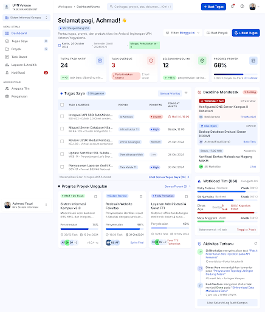
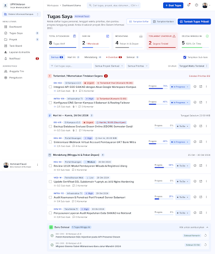
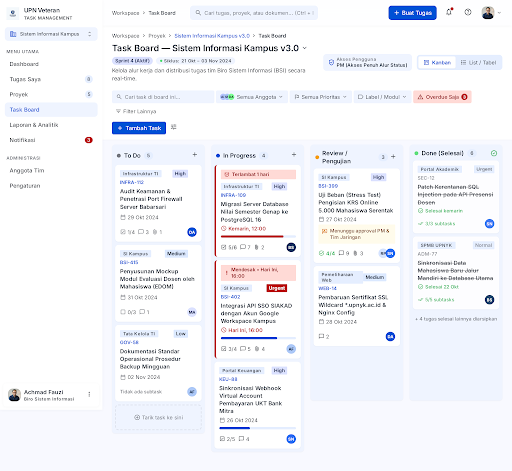
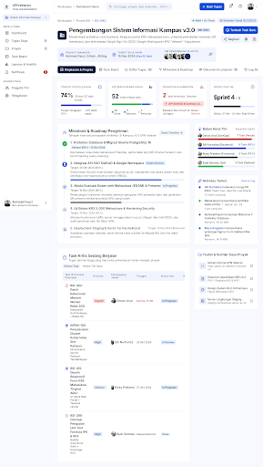
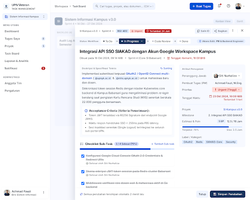
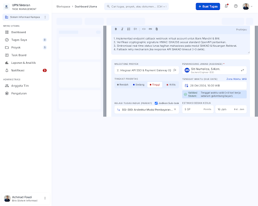
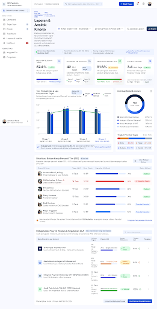
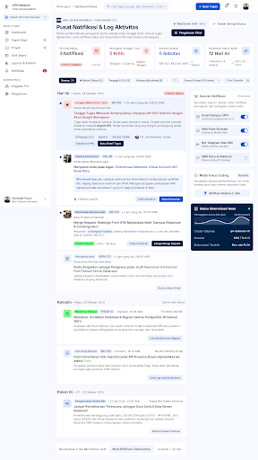
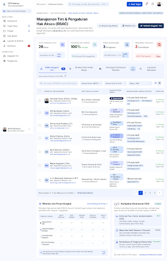

Daftar Layar & Prototipe Antarmuka
Pilih layar di bawah untuk melihat preview interaktif HTML dan screenshot desain penuh.

Screen 01Dashboard Utama
Overview ringkasan KPI, total tugas aktif, task overdue, dan statistik proyek terkini.

Screen 02Tugas Saya
Tabel daftar tugas personal anggota tim dengan filter status, prioritas, dan tenggat waktu.

Screen 03Task Board (Kanban)
Papan Kanban interaktif kolom To Do, In Progress, Review, dan Done dengan kartu tugas informatif.

Screen 04Workspace Proyek
Detail ruang kerja proyek, daftar anggota terdaftar, milestone progress, dan daftar task.

Screen 05Detail Tugas
Tampilan detail tugas, subtask checklist, histori aktivitas, form komentar, dan lampiran file.

Screen 06Form Buat Tugas Baru
Form modal input task baru dengan opsi proyek, milestone, assignee, prioritas, dan tenggat waktu.

Screen 07Laporan & Analitik
Grafik statistik produktivitas tim, penyelesaian task per triwulan, dan tombol ekspor PDF/Excel.

Screen 08Pusat Notifikasi & Aktivitas
Daftar notifikasi sistem, pengingat deadline mendekati jatuh tempo, dan riwayat aktivitas tim.

Screen 09Pengaturan Tim & RBAC
Manajemen pengguna, pengaturan peran (Admin, Project Manager, Member, Viewer) dan permission Spatie.